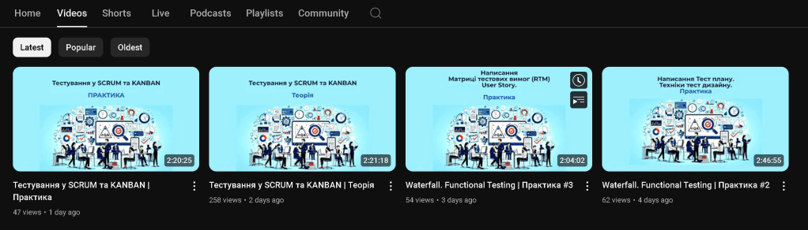
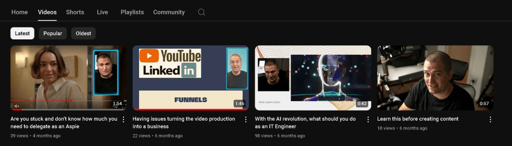

Meeting with Partners on Content Creation Focus From Just MVP ( Delivery Pilot )
Casting the Net: A Journey Through Customer Development Using the Fishing Analogy, Blue Ocean Strategy, and Business Model Canvas
In the vast ocean of business, finding and nurturing customers can feel akin to the ancient art of fishing. The customer development process mirrors the intricacies of fishing, from the initial discovery to the moment you reel in your prized catch. Let’s dive into this analogy to understand the stages of customer development through the lens of a fishing expedition, incorporating elements of Blue Ocean Strategy and trending concepts from the Business Model Canvas.
The Discovery Phase: Casting the Line
Imagine you’re standing at the edge of a serene lake, the early morning mist still clinging to the water’s surface. This is the discovery phase of customer development. In fishing, you start by surveying the waters, looking for signs of movement that indicate a good spot to cast your line. Similarly, in business, this is where you begin to explore the market, identifying potential opportunities and areas where your product or service could meet a need.
Applying Blue Ocean Strategy here means seeking out untapped markets, where competition is minimal and opportunities abound. Rather than fishing in crowded waters, you’re looking for your own clear, open sea. This strategic move helps you create a unique value proposition and stand out from the competition.
Our Tool > DevAIOps Maturity Matrix Assesment And DeliveryPilot to 10x Evolution in the enterprise
To cast your line, you need the right equipment. In this analogy, the fishing rod represents your marketing funnel. Just as a sturdy rod is essential for a successful catch, a well-designed marketing funnel is crucial for capturing leads and guiding them through the customer journey.
Baiting the Hook: Crafting Compelling Content
The next step is to bait the hook. In fishing, the bait is what attracts the fish to your line. In the realm of customer development, content is your bait. This content needs to be enticing and relevant, addressing the pain points and interests of your target audience. Whether it’s blog posts, social media updates, or email newsletters, your content should be designed to draw prospects into your marketing funnel.
To align with trending business concepts, your content should reflect elements from the Business Model Canvas such as Customer Segments, Value Propositions, and Channels. Crafting personalized content for specific customer segments and clearly communicating your unique value proposition through appropriate channels ensures your bait is irresistible.
Reeling Them In: The Sales Process
Once a fish takes the bait, the real work begins. This is akin to the sales process in customer development. With skill and patience, you reel in the fish, carefully guiding it towards your net. Similarly, the sales process involves nurturing leads, building relationships, and addressing any objections they might have. This is where your sales team steps in, using their expertise to convert leads into paying customers.
Incorporate elements like Customer Relationships and Revenue Streams from the Business Model Canvas to ensure your sales process is robust. Building strong, trust-based relationships and identifying diverse revenue streams can make this process smoother and more effective.
The Net: Customer Creation
When the fish is close enough, you use a net to secure your catch. In business, the net represents customer creation. This is the stage where a lead becomes a customer, committing to your product or service. It’s a moment of validation, confirming that your efforts have paid off and that you’ve successfully addressed a need in the market.
Building the Fleet: Scaling Your Business
A single fishing expedition can yield valuable insights and results, but to truly thrive, you need to think bigger. This is where the fleet comes in. In the customer development analogy, the fleet represents your company-building efforts. It’s about scaling your operations, expanding your reach, and optimizing your processes to handle more customers and larger markets.
Using the Blue Ocean Strategy, think about expanding into new markets with innovative products or services that redefine the industry norms. Utilize the Business Model Canvas elements like Key Activities, Key Resources, and Key Partnerships to structure and support your growth. Identifying the critical activities, resources, and partners necessary for scaling will help you build a robust and scalable business model.
Continuous Discovery: Navigating New Waters
Finally, fishing doesn’t end with a single successful catch. Just as fishermen continually seek new waters and better techniques, businesses must engage in continuous discovery. This involves constantly exploring new market opportunities, innovating your offerings, and refining your strategies.
By combining the insights of the Blue Ocean Strategy and the structured approach of the Business Model Canvas, you can navigate the ever-changing business landscape, creating value and achieving sustainable growth. This dynamic approach ensures that your business remains agile, customer-focused, and poised to seize new opportunities in an evolving market.
Current State June 2024 > Rationale > We need to fill the funnels with the sales marketing road ( Content )


Imported from rifaterdemsahin.com · 2024